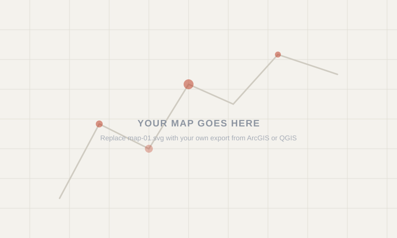

Week 01 · September 2026
Give this entry a real title
The question
In central Paris, high population density and brigthter night lights go together, because denstly populated areas have more active street lights and human activity after dark and I could check it wiht the popular density layer and night light data.
The data
I used the popultaion density layer with 2020 data and night light layer with 2024 data. The night light data is collected by VIIRS, the population data is from UK Population Charity Population Matters. There's a time gap between the information of the 2 layers. And this does not show more detailed relationship between population and night light, leaving a problem that does this two factors really have a positive relationship. (I didn't use AI in the process)
Write the proxy sentence here, once per indicator: I am using X to stand for Y, and it might fail because Z.
The method
What you actually did, in enough detail that someone else could repeat it. Which base layer, which overlay, roughly what zoom, and where you set the opacity. If you chose a threshold or a year, say why you chose it.
around the iframe, and paste your address in. ============================================================ -->
What I found
Plain language. What does the image actually support? Use at least three of the ten words — pattern, distribution, density, clustering, proximity, adjacency, connectivity, relationship, change, diffusion — and use them correctly.
What this does not show
The honest part. What the image cannot support, what you had to assume, and what would change your mind. Name the extent you chose, and say how the answer would differ if you had zoomed out one step.
AI use: AI-assisted for [what], using [which tool]. I verified [how]. If you did not use AI, write "No AI tools were used for this entry."